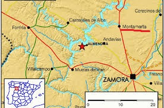

Indice de la pagina | ||
|---|---|---|
| Historia | ||
| Localizacion | ||
| Economia | ||
| Festejos y Tradiciones | ||
| Pagina Principal | ||
MontamartaHistoriaEdad Media y Edad ModernaLa fundación de Montamarta se remonta a la Edad Media, enmarcándose dentro del proceso repoblador emprendido por los reyes leoneses. Así, la primera mención escrita de Montamarta data del reinado de Fernando I de León, del año 1038.4 Posteriormente, ya en el de Fernando II de León se registra una donación de un tercio de los diezmos de los montamarteses a la iglesia de San Salvador, al obispo y a los canónigos a cambio de que se les permitiese nombrar y deponer al clérigo de la iglesia previo el consejo del obispo, del arcediano y del arcipreste. Ya en el siglo XIII, en 1220, se recoge una sentencia por parte del rey Alfonso IX de León por la cual cedía una propiedad realenga en Montamarta a la Orden de Santiago.6 Así, los restos más antiguos del pueblo se encuentran en el muro norte de la ermita de la Virgen del Castillo, siendo románicos los canecillos que quedan aún visibles. Coetánea a estos canecillos sería también la sencilla pila bautismal románica que se conserva en la iglesia parroquial de San Miguel Arcángel. Al final de la Edad Media tuvo una relevancia notoria en la zona el monasterio de Nuestra Señora de Montamarta, fundado en 1407 por dos frailes de Guadalupe, y del cual se documenta una donación otorgada al monasterio montamartés ya en 1408. No obstante, en 1534, ya en la Edad Moderna, la Orden de San Jerónimo decidió trasladar este monasterio a la ciudad de Zamora, siendo bendecida la nueva construcción ya en 1543 por el obispo zamorano, naciendo así el monasterio de los Jerónimos de Zamora, lo que provocó el abandono definitivo del monasterio jerónimo de Montamarta. Edad ContemporáneaYa en la Edad Contemporánea, al crearse las actuales provincias en la división provincial de 1833, Montamarta quedó encuadrado en la provincia de Zamora, dentro de la Región Leonesa. En la primera mitad del siglo XX, Montamarta sufrió las consecuencias de la política hidrográfica con la realización del Salto de Ricobayo (1929-1935), que provocó el embalsamiento de parte del término municipal; anegó tierras fértiles de cultivo, así como parte del núcleo urbano (los alrededores de la Fuente del Arco), obligando a movilizar a buena parte de la vecindad. Localizacion EconomiaMunicipio dedicado principalmente a la agricultura y ganadería. Ubicado en la Tierra del Pan, el cultivo tradicional ha sido de tipo cerealista. El gran impacto ambiental que supuso la realización del Salto de Ricobayo (1929-1935) privó a la comarca de todo un valle fértil. Posteriormente en los años 80, la concentración parcelaria acabó con muchos de los prados, lagunas y sotos, a favor de una agricultura intensiva. Las últimas políticas estatales que incentivaban las energías renovables (Plan de Fomento de las Energías Renovables 2000-2010) prometían inversiones en el término de Montamarta, como la central térmica solar y el parque eólico del Sierro, llegándose a materializar solamente este último. Actualmente el término municipal está incluido en El Plan de Atracción Industrial de Zamora (Zamora Norte) que busca ubicaciones idóneas para acoger grandes factorías y también persigue captar las posibles deslocalizaciones de algunos gigantes de la industria (por ejemplo: Tesla). Este plan supone una gran carrera de fondo, donde se compite con toda la España vaciada, e intenta poner freno al desmesurado ritmo de despoblación que sufre la provincia. Festejos y TradicionesMontamarta ofrece una amplia variedad de eventos festivos: Destaca el «Zangarrón», figura ancestral con representación en los días 1 y 6 de enero. La fiesta mayor, celebrada los días 15 y 16 de mayo en honor a San Isidro y a la Virgen del Castillo, respectivamente. Los carnavales, con la "carrera de cintas" y la ya restringida "carrera de gallos". También destacan otras como el Domingo del Rosario, Corpus Cristi, San Antón, Martes de Pascua, y cualquier ocasión para formar romería los alegres vecinos. El Zangarrón Según la tradición, este personaje típico de las fiestas de antruejo que sale a la calle los días de Año Nuevo y Reyes, a primera hora de la jornada recorre las calles de la localidad pidiendo el aguinaldo, unos donativos que introduce en su peculiar camisa. Durante la mañana, corre y atrapa a los mozos solteros. También participa en un punto de la liturgia de la misa, irrumpiendo en el altar y pinchando con su tridente dos hogazas de pan. El antropólogo zamorano Francisco Rodríguez Pascual reconoce que Montamarta es uno de los municipios que mejor ha conservado esta tradición ancestral en la provincia de Zamora y así testimoniaba Julio Caro Baroja cuando comentaba que los Zangarrones "aún siguen vivos". Junto al Zangarrón de Montamarta destacan otras fiestas similares en las localidades de Riofrío de Aliste, Sanzoles, Pozuelo de Tábara o Ferreras de Arriba, en las que personajes como el Tafarrón, los Carochos o la Filandorra han perpetuado la tradición popular. Indumentaria: el popular personaje a modo de "diablo" viste una indumentaria única compuesta por dos toallas, una de color marrón o rojo en una de las piernas (según el día de celebración) y amarillo en la otra pierna, que se cosen a cada una de ellas simulando un pantalón del que se prenden flores de papel. A modo de blusa porta una colcha anudada y cosida en parte con una abertura para guardar el zurrón con el aguinaldo y el chorizo que ofrece a los corredores una vez los alcanza (mozos solteros). Complementos: a la espalda le cuelgan tres cencerros, mientras que la cara la cubre con una extravagante y peculiar careta de corcho de color negro o rojo, coronada por dos orejas de liebre y más flores de papel de colores. Además, el Zangarrón lleva consigo un tridente con el que azuza a los mozos solteros que atrapa con gran astucia, en ocasiones, con la ayuda de los quintos. En este sentido, hay que destacar el esfuerzo de los vecinos por conservar la tradición e incrementar el número de visitantes a esta fiesta, cuyo eco llega a traspasar fronteras, y aún en busca de un reconocimiento turístico internacional. |